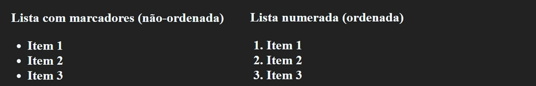
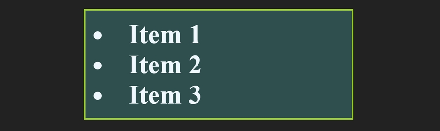
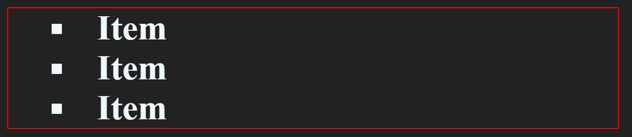
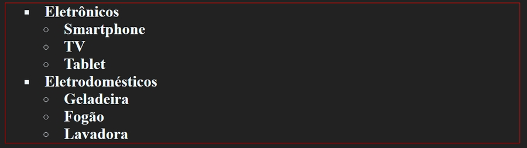

Podemos trabalhar com listas em HTML de inúmeras maneiras, no entanto precisamos ter uma noção básica sobre estilos, no momento apropriado voltaremos ao estudo de listas e sua formatação com CSS. Por agora veremos como criar listas e aplicar uma formatação básica para você ir se acostumando.
Temos dois tipos de listas, ordenadas ol e não-ordenadas ul, listas não-ordenadas são listas com marcadores e listas ordenadas são listas numeradas. Cada tipo de lista é definida com sua tag própria, mas os itens da lista são inseridos em elementos filho, com a tag li que é o item da lista (list-item), assim:
Inserindo uma lista não ordenada:
Inserindo uma lista ordenada:
- Item 1
- Item 2
- Item 3
Os exemplos acima produzem duas listas semelhantes a estas:
Basicamente a diferença entre as tags ul e ol está no estilo predefinido, porque por meio de propriedades podemos aplicar numeração a uma lista definida com ul e aplicar marcadores a uma lista definida com ol.
As propriedades aplicáveis ao elemento principal são as mesmas que a outros elementos HTML, portanto, apenas verificaremos uma lista formatada com algumas opções:
Acima temos uma lista não ordenada onde aplicamos cor de fundo, margem, padding, borda, e definimos uma largura de 300px. O resultado é semelhante a este:
Neste exemplo, os marcadores estão dentro da caixa da borda, este não é o padrão, esta propriedade foi definida no código anterior na seguinte linha:
list-style-position: inside;
Você certamente não desejaria que os marcadores da lista ficassem fora da caixa da borda, sem essa propriedade aplicada, a borda seria definida próxima ao texto.
Por padrão os itens de uma lista têm sua propriedade display definida como list-item, o que faz com que sejam exibidos um abaixo do outro, podemos alterar este valor para inline-block, de forma que sejam exibidos lado a lado:
O exemplo de lista acima é semelhante a este:
Você pode ter notado que no exemplo anterior, a lista não possui marcadores e nem numeração, o que é comum em listas horizontais. Os marcadores são definidos na propriedade list-style. Vejamos alguns exemplos:
Não é preciso definir este atributo para todos os itens da lista caso o marcador seja o mesmo para todos, nesse caso, podemos definir na tag ul em vez de definir nas tags li:
O exemplo de lista acima não possui marcadores, podemos definir a posição do marcador na mesma propriedade:
O exemplo acima produz uma lista semelhante a esta:
Listas podem conter dentro de si sub-listas, um exemplo simples é este:
O exemplo de lista acima deve ser semelhante a este:
As tags li não precisam obrigatoriamente conter texto puro, mas qualquer elemento HTML, inclusive parágrafos com a tag <p>, no exemplo abaixo criamos uma lista com botões: